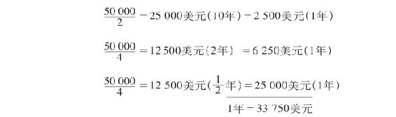

第九章 预付资本的总周转。周转的周期
我们知道，生产资本的固定组成部分和流动组成部分，是按不同的方式，以不同的期间周转的；我们又知道，同一企业的固定资本的不同组成部分，根据它们的不同的寿命，从而不同的再生产时间，又各有不同的周转期间。（关于同一企业的流动资本的不同组成部分周转上的实际差别和表面差别，见本章末的第6点。）
1. 预付资本的总周转，是它的不同组成部分的平均周转；计算方法见后。如果问题只涉及不同的期间，那么，计算它们的平均数当然是再简单不过了。但是：
2. 这里不仅有量的差别，而且有质的差别。
进入生产过程的流动资本，把它的全部价值转移到产品中去，因此，要使生产过程不间断地进行，它就必须通过产品的出售，不断用实物来补偿。进入生产过程的固定资本，只把它的一部分价值（损耗）转移到产品中去，尽管有损耗，但它继续在生产过程中执行职能；因此，固定资本要经过一段或长或短的时间，才需要用实物来补偿，但这种补偿无论如何不像流动资本那样频繁。补偿的这种必要性，再生产的期限，对固定资本的不同组成部分来说，不仅有量的差别，而且如前所述，一部分寿命较长、能使用多年的固定资本，能一年或不到一年补偿一次，以实物形式加到旧的固定资本中去，而具有其他性能的固定资本，其补偿只能在其寿命终结时一次进行。
因此，必须把固定资本不同部分的特殊周转化为周转的同种形式，使它们只有量的差别，即只有周转时间上的差别。
如果我们用P…P即连续性生产过程的形式作为起点，这种质的同一性是不会发生的。因为P的某些要素必须不断用实物来补偿，另一些要素则不必如此。但G…G′形式无疑会提供周转的这种同一性。例如有一台价值10 000镑的机器，寿命为10年，因而每年有1/10＝1 000镑再转化为货币。这1 000镑在一年之间，由货币资本再转化为生产资本和商品资本，又由商品资本再转化为货币资本。它像我们在这个形式下考察的流动资本一样，回到它原来的货币形式，而这1 000镑货币资本，年终是否再转化为一台机器的实物形式，是没有关系的。因此，在计算预付生产资本的总周转时，我们把它的全部要素固定在货币形式上，这样，回到货币形式就是周转的终结。我们总是把价值看做是以货币预付的，甚至在价值的这种货币形式只是以计算货币形式出现的连续性生产过程中，也是如此。这样，我们就可以计算出平均数。
3. 由此可见：即使预付生产资本的极大部分，是由其再生产时间从而周转时间形成一个持续多年的周期的那种固定资本构成，但是，由于流动资本在一年内反复周转，一年内周转的资本价值还是能够大于预付资本的总价值。
假定固定资本＝80 000镑，它的再生产时间＝10年，这样每年有8 000镑回到货币形式，或者说，固定资本每年完成它的周转的1/10。假定流动资本＝20 000镑，每年周转5次。这样，总资本＝100 000镑。 周转的固定资本＝8 000镑；周转的流动资本＝5× 20 000＝100 000镑。因此， 一年内周转的资本＝108 000镑，比预付资本大8 000镑。周转的是资本的1＋2/25。
4. 因此，预付资本的价值周转，是和它的实际再生产时间，或者说，和它的各种组成部分的现实周转时间相分离的。假定一个4 000镑的资本每年周转5次。这样，周转的资本是5×4 000＝20 000镑。但每次周转终结时流回而被重新预付的，是原来预付的4 000镑资本。它的量，不会因为它借以重新执行资本职能的各个周转期间的数目而改变。（把剩余价值撇开不说。）
因此，用第3点的例子来说，按照假定，年终回到资本家手中的有：（a）一个20 000镑的价值额，它重新用做资本的流动组成部分；（b）一个8 000镑的价值额，它由于损耗从预付固定资本价值中分出，同时，这个固定资本仍然存在于生产过程中，不过价值已经不是80 000镑，而是减为72 000镑了。生产过程还要继续9年，直到预付固定资本结束自己的寿命，不能再作为产品形成要素和价值形成要素执行职能，而必须替换。因此，预付资本价值必须完成一个包含多次周转的周期，例如在上述场合，就是一个包含10个年周转的周期，而这个周期是由所使用的固定资本的寿命决定的，从而是由它的再生产时间或周转时间决定的。
所使用的固定资本的价值量和寿命，会随着资本主义生产方式的发展而增加，与此相适应，每个特殊的投资部门的产业和产业资本的寿命也会延长为持续多年的寿命，比如说平均为10年。一方面，固定资本的发展使这种寿命延长，而另一方面，生产资料的不断变革——这种变革也随着资本主义生产方式的发展而不断加快——又使它缩短。因此，随着资本主义生产方式的发展，生产资料的变换也加快了，它们因无形损耗而远在有形寿命终结之前就要不断补偿的必要性也增加了。可以认为，大工业中最有决定意义的部门的这个生命周期现在平均为10年。但是这里的问题不在于确切的数字。有一点是很清楚的：这种由一些互相联结的周转组成的长达若干年的周期(1)资本被它的固定组成部分束缚在这种周期之内），为周期性的危机造成了物质基础。在周期性的危机中，营业要依次通过松弛、中等活跃、急剧上升和危机这几个时期。虽然资本投入的那段期间是极不相同和极不一致的，但危机总是大规模新投资的起点。因此，就整个社会考察，危机又或多或少地是下一个周转周期的新的物质基础。（22[a]）
5. 关于周转的计算方法，我们听一位美国经济学家是怎样说的。58
“在一些生产部门内，全部预付资本在一年内周转或流通多次；在另一些生产部门内，预付资本一部分在一年内周转一次以上，另一部分则没有这么频繁。资本家必须按照他的全部资本经过他的手或周转一次所需要的平均期间，来计算他的利润。假定某人把资本投入某种营业时，一半投在建筑物和机器上，10年更新一次；1/4投在工具等等上，两年更新一次；其余1/4投在工资和原料上，一年周转两次。他的全部资本为50 000美元。在这种情况下，他每年的支出如下：

因此，他的全部资本周转一次的平均时间是16个月59…… 假设有另一种情形：总资本50 000美元的1/4是10年流通一次，1/4是1年流通一次，其余1/2是1年流通两次。在这种情况下，每年的支出如下：
6. 资本的不同部分的周转上的实际差别和表面差别。——同一个斯克罗普在同一处[第141页]还说：
“工厂主，农场主，或商人用于支付工资的资本流通得最快，因为如果他对工人每周支付一次，这种资本就可能由于他每周的卖货或付账而获得的进款每周周转一次。投在原料和成品储备上的资本流通得没有这样快，它每年或许周转两次或四次，这要看买进原料和卖出成品的间隔时间而定，这里假定资本家是以相同的信用期限进行买和卖的。投在工具和机器上的资本流通得更慢，因为它平均也许要五年或十年才周转一次，也就是才消费掉，才被更新，虽然有不少工具经过一系列操作之后，就已经不能使用了。投在例如工厂、店铺、栈房、谷仓等建筑物和投在道路、灌溉工程等上的资本，看来几乎是根本不流通的。但实际上，这些设施完全和上述各项一样，会在它们协助进行生产的时候消耗掉，并且必须再生产出来，以便生产者的活动能够继续下去。差别只在于：它们比其他各项消费得慢些，也再生产得慢些……投在它们上面的资本也许要20年或50年才周转一次。”
在这里，斯克罗普把那种对单个资本家来说由支付期限和信用关系而在流动资本某些部分的流动中引起的差别，和那种由资本性质引起的周转混为一谈。他说，工资必须每周用每周的卖货或付账所得的进款来支付。首先这里要指出，就工资本身来说，也存在着差别，因为支付期限有长有短，即工人不得不给予资本家的信贷的时间有长有短，也就是工资的支付期限有一周的、一个月的、三个月的、半年的，等等。这里也适用我们以前已经阐明的规律：“必需的支付手段量（也就是要一次预付的货币资本量），与支付期限的长短成正比(2)。”（见第一册第三章第3节b第124页60）
其次，加入每周产品的，不仅有在生产产品时由一周劳动加进的新价值的总量，而且有在一周产品上所消耗的原料和辅助材料的价值。产品中包含的这个价值，和产品一起流通。通过这个产品的出售，它获得货币形式，并且必须重新转化为同一些生产要素。这一点既适用于劳动力，也适用于原料和辅助材料。但我们已经知道（第六章第II节1），生产的连续性要求有生产资料的储备，这种储备在不同生产部门是不相同的，在同一生产部门，就流动资本的这个要素的不同组成部分（例如煤炭和棉花）来说，也是不相同的。因此，虽然这些材料必须不断用实物来补偿，但是不需要不断重新购买。重新购买的次数多少，要看现有储备量的大小，要看储备可用多久。至于劳动力，这样的储备是没有的。投在劳动上的资本部分和投在辅助材料和原料上的资本部分，是一起再转化为货币的。但是，货币一方面向劳动力和另一方面向原料的再转化，是分开进行的，因为这两个组成部分的购买期限和支付期限是不同的。其中一个组成部分，即生产储备，在较长的时期购买一次；另一个组成部分，劳动力，在较短的时期例如一周购买一次。另一方面，资本家除了生产储备之外，还必须有成品的储备。撇开销售上的困难等等不说，有一定量商品比如说是要按订货生产的。当下一批商品正在生产的时候，先前制成的部分则堆在仓库内，直到订货全部制成。只要流动资本的某些要素在生产过程的准备阶段（例如木材的干燥）上应比其他要素停留得久些，就会在流动资本的周转上又造成差别。
斯克罗普这里提到的信用制度，和商业资本一样，对单个资本家来说，会使周转发生变化。就社会范围来说，信用制度只有在不仅加速生产，而且也加速消费的情况下，才会使周转发生变化。
(1) （22[a]）“城市的生产被束缚在日周转中，农村的生产则被束缚在年周转中。”（弥勒《治国艺术原理》1809年柏林版第3册第178页）57这就是浪漫主义者关于工业和农业的天真的观念。
(2) 第一版和第二版中是：反比。——编者注
[57] 在马克思的第VII笔记本中1859—1862年在伦敦作的摘录笔记中有对亚·弥勒《治国艺术原理》作的摘录笔记。——207。
58 引自阿·波特尔的《政治经济学：它的对象、应用和原理。以美国人的生活状况来加以说明》1841年纽约版。从导言可以看出，该书的大部分基本上是1833年在英国发表的乔·斯克罗普《政治经济学原理》一书前十章的翻版（阿·波特尔作了一些修改）。
下面的引文采自马克思第VII笔记本中1859—1862年在伦敦作的摘录笔记。在此之前，马克思于1851年曾经对斯克罗普的《政治经济学原理》作过摘录。见《马克思恩格斯全集》历史考证版第4部分第8卷第592—596页。——207。 [59] 马克思在手稿中指出，这种计算资本周转时间的方法是错误的。引文中的周转的平均时间（16个月）是把全部资本5万美元的7(1/2)%的利润计算在内的。如果不算利润，这些资本的周转时间就是18个月。——207。
60 见《马克思恩格斯文集》第5卷第166页。——209。